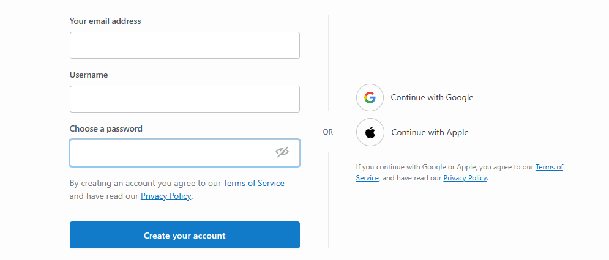
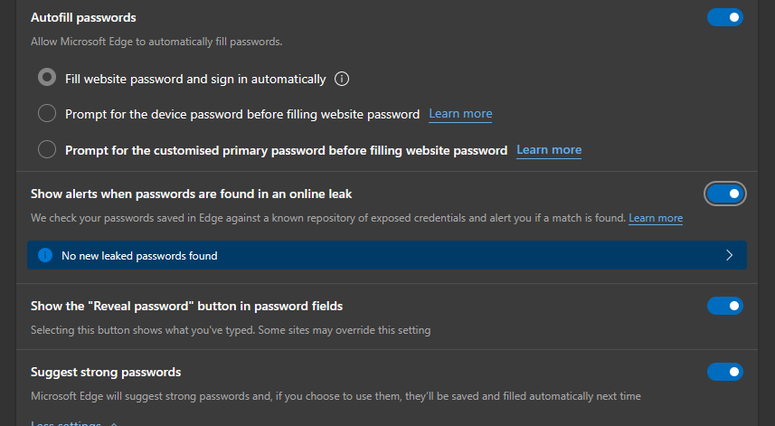

Welcome to the field of cybersecurity, where the fight against cyber threats is
never-ending. Our passwords are the first line of protection against fraudsters
attempting to gain access to our valued accounts without authorisation as we
explore the digital world.
But fret not! In this post, we’ll unveil the password security trade secrets
and provide you with useful advice so YOU can raise your cybersecurity game
without getting bogged down in technical jargon. So, let’s start learning the
art of password protection while you grab your virtual sword and shield!
Creating Strong and Unique Passwords:
Does this landing page look familiar? Take a close look! Chances are, you’ve seen a scene like this countless times while opening an online account. But have you ever given it some thought how important a password is in protecting your account from online threats?
The first line of protection against unwanted access is a strong and unique password, which is essential in protecting your online presences. Choose a passphrase that is nearly impossible for others to decipher but that you can remember.
You can use a combination of uppercase and lowercase letters, numbers,
and special characters to make it between 12 and 15 characters long.
Let me give you an example!
“#Br00k1yn-99!” is a mighty password that is
simple to remember, yet difficult to crack. You’ll be well on your way to
improving your cybersecurity posture and protecting your accounts from potential
intrusions if you start with a strong and unique password as your foundation.
Levelling Up with Password Managers:
If you’re a forgetful person (just like me!), then passwords like “#Br00k1yn-99!” can be overwhelming. But don’t worry! Introducing password managers – the unsung heroes of password management.
Many web browsers such as Google Chrome, Safari and Mozilla Firefox have incorporated password managers. These managers make login seamless by filling in passwords for websites automatically! You can create unique passwords for each account, doing away with the necessity for frequently used and weak passwords.
The Importance of Regularly Updating and Changing Passwords:

Passwords can become vulnerable over time, just like a knight’s armor! To keep your passwords strong, you must periodically update them. While reusing passwords across accounts is tempting, doing so is like leaving all the castle gates unlocked with ONE key.
Be proactive and routinely update your passwords, especially for those accounts with the most critical information. Do not ever divulge your passwords to anybody else. Only you should use them because they are your personal secret weapon in safeguarding your accounts.
Conclusion:
Congratulations, you heroic guardian of the virtual world! Now
that you’ve learnt the art of password security, you’re equipped with strong
methods and tools for defending your online accounts.
You have leveled up your cybersecurity game and made a HUGE step in
safeguarding your priceless online presence by creating robust passwords,
using password managers and routinely updating your passwords.
Remember these suggestions and maintain vigilance in your online safety!